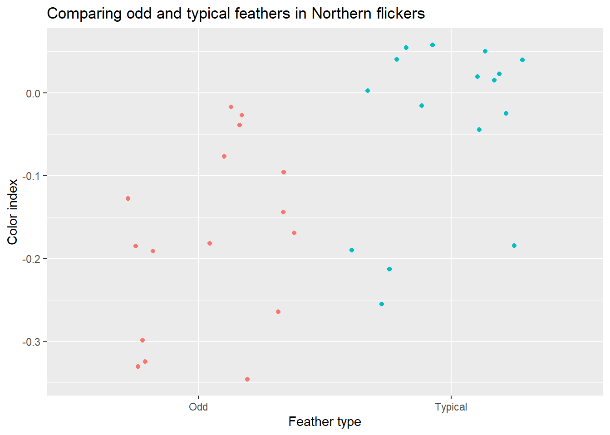
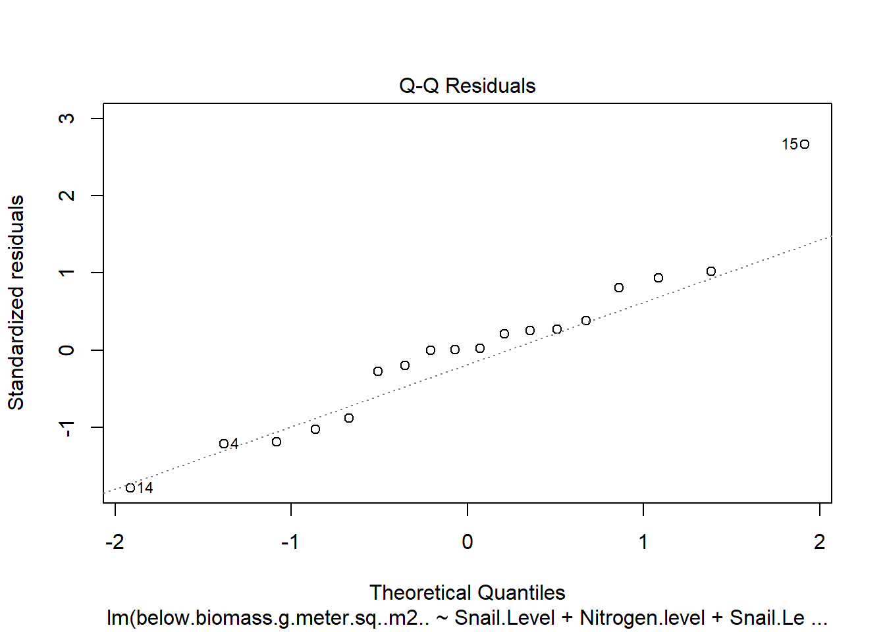

library(rmarkdown)
paged_table(feather)More ANOVAs
Dealing with multiple group membership and interactions
In the last chapter we introduced the idea of comparing means among populations (one-way ANOVAs, our first linear models). However, the units that we measure may belong to multiple groups. We will extend our analysis of variance to consider multiple group membership and interactions in this chapter. As a starting point, consider that group membership may be an inherent property of the unit we measure or we may assign it.
Example: Back to the birds
One of the last chapters practice problems focused bird feathers. While studying feather color in Northern flickers (Colaptes auratus), Wiebe and Bortolotti (2002) noted that ~25% of birds had one or more “odd” tail feathers. They decided to compare the color of these odd and “typical” feathers.
.jpg)
Example and data provided by McDonald (2014).
How do we analyze this data?
We may first note that we have a continuous measurement (feather color, measured using color hues from a digital camera and another statistical technique that we will not go into here) and a categorical variable (feather type, with levels “typical” and “odd”). This hopefully reminds you of an ANOVA/t-test!
We could plot the data
library(ggplot2)
ggplot(feather, aes(x=Feather_type, y= Color_index, color=Feather_type))+
geom_jitter()+
labs(y= "Color index",
x= "Feather type",
title="Comparing odd and typical feathers in Northern flickers")+
guides(color=F)Warning: The `<scale>` argument of `guides()` cannot be `FALSE`. Use "none" instead as
of ggplot2 3.3.4.
Develop a set of hypotheses:
\[ \begin{split} H_O: \mu_{\textrm{odd feather color}} = \mu_{\textrm{typical feather color}}\\ H_A: \mu_{\textrm{odd feather color}} \neq \mu_{\textrm{typical feather color}}\\ \end{split} \]
and test them using a t-test:
t.test(Color_index ~ Feather_type, data=feather)
Welch Two Sample t-test
data: Color_index by Feather_type
t = -3.56, df = 29.971, p-value = 0.00126
alternative hypothesis: true difference in means between group Odd and group Typical is not equal to 0
95 percent confidence interval:
-0.21579254 -0.05845746
sample estimates:
mean in group Odd mean in group Typical
-0.176125 -0.039000 or, using more generalizable functions, a linear model:
library(car)Loading required package: carDataAnova(lm(Color_index ~ Feather_type, data=feather), type = "III")Anova Table (Type III tests)
Response: Color_index
Sum Sq Df F value Pr(>F)
(Intercept) 0.49632 1 41.816 3.814e-07 ***
Feather_type 0.15043 1 12.674 0.001259 **
Residuals 0.35607 30
---
Signif. codes: 0 '***' 0.001 '**' 0.01 '*' 0.05 '.' 0.1 ' ' 1We find a significant p value, but we did not check assumptions. For linear models (remember, $i.i.d. N(,)$, we could use our visual checks
plot(lm(Color_index ~ Feather_type, data=feather))


Which appears ok, but there is a problem.
Our data are not independent!
Lack of Independence
Odd and typical feathers were measured on a single bird (note the Bird column) in the dataset. We might assume feathers on a given bird are more closely related in color than feathers on different birds. This could be due to diet or other factors making all feathers on a given bird brighter or darker than those on another. Regardless of reason (and “good” p value), we know the measurements are linked in some way. Note we could “connect” individual observations.
ggplot(feather, aes(x=Feather_type, y= Color_index, color=Feather_type, group=Bird))+
geom_line(position = position_dodge(0.4), color="black") +
geom_point(position = position_dodge(0.4)) +
labs(y= "Color index",
x= "Feather type",
title="Comparing odd and typical feathers in Northern flickers")+
guides(color=F)
When this is true, we need to consider these connections.
Blocking, two-way ANOVAs,and paired t-tests
In this case the connections may be considered artifacts of the data. We didn’t assign birds. We also made a choice to compare odd and typical feathers from the same bird - why? In general, accounting for extra variation in the data will give you a better answer about how a given variable influences outcomes. This may be called blocking. Although the motivation might therefore be to get a “better” p value, it should be driven by experimental design (and thus we started with an example where we didn’t “need” to account for it to achieve significance).
In order to consider how color differs by bird and feather type, we need to add both variables to our model. This is possible because, as we noted earlier, we can subdivide variance among multiple levels. For each variable we add, we also add a null (and corresponding alternative) hypothesis. So we retain our focus on feather type:
\[ \begin{split} H_O: \mu_{\textrm{odd feather color}} = \mu_{\textrm{typical feather color}}\\ H_A: \mu_{\textrm{odd feather color}} \neq \mu_{\textrm{typical feather color}}\\ \end{split} \]
but also add a set of hypotheses focused on birds:
\[ \begin{split} H_O: \mu_{\textrm{color of bird A}} = \mu_{\textrm{color of bird B}}....\textrm{for all birds}\\ H_A: \mu_{\textrm{color of bird A}} \neq \mu_{\textrm{color of bird B}}....\textrm{for all birds}\\ \end{split} \]
We can analyze this using our linear model approach. Since both variables are categorical, this is often called a two-way ANOVA. First, let’s make the object
two_way_anova_example <- lm(Color_index ~ Feather_type + Bird, data=feather)Then check the assumptions
plot(two_way_anova_example)


Note, visually speaking, the residuals do appear to be closer to normal now. Since assumptions look ok, we can analyze the outcome
summary(two_way_anova_example)
Call:
lm(formula = Color_index ~ Feather_type + Bird, data = feather)
Residuals:
Min 1Q Median 3Q Max
-0.12444 -0.05209 0.00000 0.05209 0.12444
Coefficients:
Estimate Std. Error t value Pr(>|t|)
(Intercept) -0.35806 0.06955 -5.148 0.000119 ***
Feather_typeTypical 0.13712 0.03374 4.065 0.001017 **
BirdB 0.09050 0.09542 0.948 0.357936
BirdC 0.04500 0.09542 0.472 0.643998
BirdD 0.12500 0.09542 1.310 0.209903
BirdE 0.25350 0.09542 2.657 0.017950 *
BirdF 0.25750 0.09542 2.699 0.016505 *
BirdG 0.15000 0.09542 1.572 0.136802
BirdH 0.25250 0.09542 2.646 0.018330 *
BirdI 0.28850 0.09542 3.023 0.008554 **
BirdJ 0.21500 0.09542 2.253 0.039643 *
BirdK 0.25300 0.09542 2.651 0.018139 *
BirdL 0.14450 0.09542 1.514 0.150719
BirdM 0.13650 0.09542 1.431 0.173069
BirdN 0.21900 0.09542 2.295 0.036567 *
BirdO 0.25300 0.09542 2.651 0.018139 *
BirdP 0.22750 0.09542 2.384 0.030759 *
---
Signif. codes: 0 '***' 0.001 '**' 0.01 '*' 0.05 '.' 0.1 ' ' 1
Residual standard error: 0.09542 on 15 degrees of freedom
Multiple R-squared: 0.7304, Adjusted R-squared: 0.4427
F-statistic: 2.539 on 16 and 15 DF, p-value: 0.03923Anova(two_way_anova_example, type= "III")Anova Table (Type III tests)
Response: Color_index
Sum Sq Df F value Pr(>F)
(Intercept) 0.24133 1 26.5059 0.000119 ***
Feather_type 0.15043 1 16.5214 0.001017 **
Bird 0.21950 15 1.6072 0.184180
Residuals 0.13657 15
---
Signif. codes: 0 '***' 0.001 '**' 0.01 '*' 0.05 '.' 0.1 ' ' 1Note we see a significant difference in color among birds and feather type. Although we may be tempted to (and could) use post-hoc tests to consider which birds are different than which others, this is typically not done for blocked variables. We did not assign these pairings and it is not the focus of our efforts.
Since we only had 2 types of feathers, we also don’t need post-hoc tests. A significant p value means they differ from each other, and the estimates provided by the summary command indicate the typical feathers have a higher color index.
t-test connections
When we have only two measurements per group (e.g., odd and typical feathers from each bird), we can use a t-test approach to achieve similar goals. This approach is known as a paired t-test. Instead of focusing on the difference in means (like a 2-sample t-test), the test focuses on the mean difference between paired measurements (which would be 0 under the null hypothesis!). In this way, it is effectively a one-sample test that is pairing the data to reduce variation (blocking). We can do carry out the test:
t.test(Color_index ~ Feather_type, data=feather, paired=TRUE)
Paired t-test
data: Color_index by Feather_type
t = -4.0647, df = 15, p-value = 0.001017
alternative hypothesis: true mean difference is not equal to 0
95 percent confidence interval:
-0.20903152 -0.06521848
sample estimates:
mean difference
-0.137125 and get the same results as above (note we don’t even have to consider corrections like the Welch approach since this a one-sample test). Common examples of paired t-tests include before-after and twin studies.
In an earlier chapters we considered options for one- and two-sample tests when t-tests assumptions were not met. For two-sample tests, one of these approaches, the sign or binary test, is only valid for paired data. The differences in paired observations are compared to a set value (typically 0). Under the null hypothesis, half should be below the proposed median and half should be above. Differences matching the proposed value are ignored, thus reducing the sample size and making it harder to reject the null hypothesis; this is actually an odd way of accounting for them. The proportion of values below the proposed median is then evaluated using a binomial test. For two sample, the SIGN.test function in the BSDA package requires 2 columns of data and assumes the order of the column represents paired data.
library(BSDA)Loading required package: lattice
Attaching package: 'BSDA'The following objects are masked from 'package:carData':
Vocab, WoolThe following object is masked from 'package:datasets':
OrangeSIGN.test(feather[feather$Feather_type == "Odd", "Color_index"],
feather[feather$Feather_type == "Typical", "Color_index"],
md = 0)
Dependent-samples Sign-Test
data: feather[feather$Feather_type == "Odd", "Color_index"] and feather[feather$Feather_type == "Typical", "Color_index"]
S = 3, p-value = 0.02127
alternative hypothesis: true median difference is not equal to 0
95 percent confidence interval:
-0.24048275 -0.02331055
sample estimates:
median of x-y
-0.114
Achieved and Interpolated Confidence Intervals:
Conf.Level L.E.pt U.E.pt
Lower Achieved CI 0.9232 -0.2400 -0.0320
Interpolated CI 0.9500 -0.2405 -0.0233
Upper Achieved CI 0.9787 -0.2410 -0.0140More than 2 measurements? Back to the linear model
We can also block for variation when we take more than 2 measurements per unit. For example, imagine if these birds also had a special, long tail feather.
set.seed(25)
special <- data.frame(Bird = LETTERS[1:16], Feather_type = "Special",
Color_index= feather[feather$Feather_type == "Typical", "Color_index"] +
.3 +runif(16,1,1)*.01)
feather_extra <- merge(feather, special, all = T)
feather_extra$Feather_type <- factor(feather_extra$Feather_type)We could still block for variation using the linear model/ANOVA, but not the t-test, approach. As another review, we create the model
more_blocks <-lm(Color_index ~ Feather_type + Bird, data=feather_extra)Check assumptions
plot(more_blocks)


Check outcome (this time focusing on Anova output)
Anova(more_blocks, type="III")Anova Table (Type III tests)
Response: Color_index
Sum Sq Df F value Pr(>F)
(Intercept) 0.36392 1 59.9538 1.224e-08 ***
Feather_type 1.67906 2 138.3093 7.208e-16 ***
Bird 0.34649 15 3.8055 0.0008969 ***
Residuals 0.18210 30
---
Signif. codes: 0 '***' 0.001 '**' 0.01 '*' 0.05 '.' 0.1 ' ' 1We still see feather type has a significant impact on color, but since we have more than 2 groups we need to follow up this finding with a post-hoc test.
library(multcomp)Loading required package: mvtnormLoading required package: survivalLoading required package: TH.dataLoading required package: MASS
Attaching package: 'TH.data'The following object is masked from 'package:MASS':
geysercompare <- glht(more_blocks, linfct = mcp(Feather_type = "Tukey"))
summary(compare)
Simultaneous Tests for General Linear Hypotheses
Multiple Comparisons of Means: Tukey Contrasts
Fit: lm(formula = Color_index ~ Feather_type + Bird, data = feather_extra)
Linear Hypotheses:
Estimate Std. Error t value Pr(>|t|)
Special - Odd == 0 0.44713 0.02755 16.232 <1e-04 ***
Typical - Odd == 0 0.13713 0.02755 4.978 <1e-04 ***
Typical - Special == 0 -0.31000 0.02755 -11.254 <1e-04 ***
---
Signif. codes: 0 '***' 0.001 '**' 0.01 '*' 0.05 '.' 0.1 ' ' 1
(Adjusted p values reported -- single-step method)Other ways to be in multiple groups
In the bird example, one of our categories (bird) was un-intential. We chose to measure odd and typical feathers, and accounting for variation among birds was an appropriate step given lack of independece in measurements. However, we can also assign units to multiple groups. Doing so can let us consider the main effects of multiple variables and potential interactions among them in what is often called a factorial ANOVA.
For example, Valdez et al. (2023) wanted to consider the impact of top-down (snail grazing) and bottom- up (nutrient availability) on marsh plant (Spartina alterniflora) growth. To do this, they assigned plots to one of 3 grazer treatments and one of 2 nitrogen treatments.
![Map of study site on Hog Island, Virginia, USA and conceptual illustration of experimental design with the following treatments: 1) Nitrogen addition with ambient snails, 2) nitrogen addition with three times ambient snails, 3) nitrogen addition without snails, 4) ambient nitrogen with ambient snails, 5) ambient nitrogen with three times ambient snails, and 6) ambient nitrogen without snails. The figure also depicts cage controls and uncaged plots used to assess caging effects on marsh plants. The map in the figure was created in R using ggmap [33] from ©OpenStreetMap under a ODb license, with permission from OpenStreetMapFoundation, original copyright 2018. https://www.openstreetmap.org/copyright.](../..\images/journal.pone.0286327.g001.PNG)
This design is different from the bird example. No two measurements for a given trait were taken on the same plot. In this case, we likely care about the main effects, or impacts, of both variables. However, we may also need to consider interactions among the variables. Interactions occur when the impact of one variable depends on the level of another. For example, snail removal might have major impacts on nitrogen-enriched plots while having no impact on ambient plots. Due to this, we now have even more hypotheses:
\[ \begin{split} H_O: \mu_\textrm{plant growth, no fertilizer} = \mu_\textrm{plant growth, fertilizer}\\ H_O: \mu_\textrm{plant growth, snails removed} = \mu_\textrm{plant growth, control snails}= \mu_\textrm{plant growth, snails added}\\ H_O: \textrm{impact of snail grazing does not depend on nitrogen level}\\ \end{split} \]
Fortunately, these are easy to consider in our linear model framework. We simply add the interaction between two variables using the “:” notation. We’ll focus on below-ground biomass (standardized to m2) for this example (the paper measured 9 response variables!)
valdez_2023 <- read.csv("data/Spartina_alterniflora_traits.csv", stringsAsFactors = T)
bgb_model <-lm(below.biomass.g.meter.sq..m2..~Snail.Level + Nitrogen.level + Snail.Level:Nitrogen.level, valdez_2023)For shorthand, note that if we put main effect * main effect in a model, it automatically adds the interaction term.
bgb_model_shorthand <-lm(below.biomass.g.meter.sq..m2..~Snail.Level * Nitrogen.level, valdez_2023)
summary(bgb_model)
Call:
lm(formula = below.biomass.g.meter.sq..m2.. ~ Snail.Level + Nitrogen.level +
Snail.Level:Nitrogen.level, data = valdez_2023)
Residuals:
Min 1Q Median 3Q Max
-103.003 -50.933 1.507 28.297 153.937
Coefficients: (1 not defined because of singularities)
Estimate Std. Error t value
(Intercept) 542.16 40.72 13.315
Snail.Levelremoval 33.58 57.58 0.583
Snail.Levelsnail addition -88.85 57.58 -1.543
Snail.Leveluncaged 45.09 57.58 0.783
Nitrogen.levelwithout -111.87 57.58 -1.943
Snail.Levelremoval:Nitrogen.levelwithout 43.39 81.44 0.533
Snail.Levelsnail addition:Nitrogen.levelwithout 60.18 81.44 0.739
Snail.Leveluncaged:Nitrogen.levelwithout NA NA NA
Pr(>|t|)
(Intercept) 2.44e-09 ***
Snail.Levelremoval 0.5691
Snail.Levelsnail addition 0.1451
Snail.Leveluncaged 0.4467
Nitrogen.levelwithout 0.0724 .
Snail.Levelremoval:Nitrogen.levelwithout 0.6025
Snail.Levelsnail addition:Nitrogen.levelwithout 0.4721
Snail.Leveluncaged:Nitrogen.levelwithout NA
---
Signif. codes: 0 '***' 0.001 '**' 0.01 '*' 0.05 '.' 0.1 ' ' 1
Residual standard error: 70.53 on 14 degrees of freedom
Multiple R-squared: 0.498, Adjusted R-squared: 0.2829
F-statistic: 2.315 on 6 and 14 DF, p-value: 0.09183summary(bgb_model_shorthand)
Call:
lm(formula = below.biomass.g.meter.sq..m2.. ~ Snail.Level * Nitrogen.level,
data = valdez_2023)
Residuals:
Min 1Q Median 3Q Max
-103.003 -50.933 1.507 28.297 153.937
Coefficients: (1 not defined because of singularities)
Estimate Std. Error t value
(Intercept) 542.16 40.72 13.315
Snail.Levelremoval 33.58 57.58 0.583
Snail.Levelsnail addition -88.85 57.58 -1.543
Snail.Leveluncaged 45.09 57.58 0.783
Nitrogen.levelwithout -111.87 57.58 -1.943
Snail.Levelremoval:Nitrogen.levelwithout 43.39 81.44 0.533
Snail.Levelsnail addition:Nitrogen.levelwithout 60.18 81.44 0.739
Snail.Leveluncaged:Nitrogen.levelwithout NA NA NA
Pr(>|t|)
(Intercept) 2.44e-09 ***
Snail.Levelremoval 0.5691
Snail.Levelsnail addition 0.1451
Snail.Leveluncaged 0.4467
Nitrogen.levelwithout 0.0724 .
Snail.Levelremoval:Nitrogen.levelwithout 0.6025
Snail.Levelsnail addition:Nitrogen.levelwithout 0.4721
Snail.Leveluncaged:Nitrogen.levelwithout NA
---
Signif. codes: 0 '***' 0.001 '**' 0.01 '*' 0.05 '.' 0.1 ' ' 1
Residual standard error: 70.53 on 14 degrees of freedom
Multiple R-squared: 0.498, Adjusted R-squared: 0.2829
F-statistic: 2.315 on 6 and 14 DF, p-value: 0.09183You may note a weird NA here (we’ll come back to it) but we should really check model assumptions before looking at output.
plot(bgb_model)


These look ok. There may be a slight increase in variance with fitted values, but we can work with this. Let’s return to our summary and build an ANOVA table.
summary(bgb_model)
Call:
lm(formula = below.biomass.g.meter.sq..m2.. ~ Snail.Level + Nitrogen.level +
Snail.Level:Nitrogen.level, data = valdez_2023)
Residuals:
Min 1Q Median 3Q Max
-103.003 -50.933 1.507 28.297 153.937
Coefficients: (1 not defined because of singularities)
Estimate Std. Error t value
(Intercept) 542.16 40.72 13.315
Snail.Levelremoval 33.58 57.58 0.583
Snail.Levelsnail addition -88.85 57.58 -1.543
Snail.Leveluncaged 45.09 57.58 0.783
Nitrogen.levelwithout -111.87 57.58 -1.943
Snail.Levelremoval:Nitrogen.levelwithout 43.39 81.44 0.533
Snail.Levelsnail addition:Nitrogen.levelwithout 60.18 81.44 0.739
Snail.Leveluncaged:Nitrogen.levelwithout NA NA NA
Pr(>|t|)
(Intercept) 2.44e-09 ***
Snail.Levelremoval 0.5691
Snail.Levelsnail addition 0.1451
Snail.Leveluncaged 0.4467
Nitrogen.levelwithout 0.0724 .
Snail.Levelremoval:Nitrogen.levelwithout 0.6025
Snail.Levelsnail addition:Nitrogen.levelwithout 0.4721
Snail.Leveluncaged:Nitrogen.levelwithout NA
---
Signif. codes: 0 '***' 0.001 '**' 0.01 '*' 0.05 '.' 0.1 ' ' 1
Residual standard error: 70.53 on 14 degrees of freedom
Multiple R-squared: 0.498, Adjusted R-squared: 0.2829
F-statistic: 2.315 on 6 and 14 DF, p-value: 0.09183Anova(bgb_model, type="III")Error in Anova.III.lm(mod, error, singular.ok = singular.ok, ...): there are aliased coefficients in the modelBut we got an error! What happened? Let’s look at the data
paged_table(valdez_2023)A summary may help more. Note we can summarize across multiple factors.
library(Rmisc)Loading required package: plyrsummarySE(valdez_2023, measurevar = "below.biomass.g.meter.sq..m2..", groupvars = c("Snail.Level", "Nitrogen.level")) Snail.Level Nitrogen.level N below.biomass.g.meter.sq..m2.. sd
1 control snails Fertilized 3 542.1633 135.83149
2 control snails without 3 430.2967 63.43541
3 removal Fertilized 3 575.7433 15.33561
4 removal without 3 507.2633 58.85590
5 snail addition Fertilized 3 453.3100 60.54124
6 snail addition without 3 401.6267 11.88948
7 uncaged without 3 475.3833 69.54555
se ci
1 78.422349 337.42413
2 36.624450 157.58229
3 8.854019 38.09577
4 33.980472 146.20617
5 34.953501 150.39278
6 6.864392 29.53510
7 40.152141 172.76072Note the uncaged treatment only has without for the nitrogen impact. It was a control! While we often need these in experiments, they can create analysis problems. This is because we can’t consider how nutrient level depends on snail treatment for the control level! You could note we have the same issue for our initial bird analysis:
two_way_anova_example_int <- lm(Color_index ~ Feather_type * Bird, data=feather)
Anova(two_way_anova_example_int, type="III")Error in Anova.lm(two_way_anova_example_int, type = "III"): residual df = 0On a positive note, this means R will typically not consider interactions when it shouldn’t, but you need to know why in order to fix it.
The NAs in the model summary
summary(bgb_model)
Call:
lm(formula = below.biomass.g.meter.sq..m2.. ~ Snail.Level + Nitrogen.level +
Snail.Level:Nitrogen.level, data = valdez_2023)
Residuals:
Min 1Q Median 3Q Max
-103.003 -50.933 1.507 28.297 153.937
Coefficients: (1 not defined because of singularities)
Estimate Std. Error t value
(Intercept) 542.16 40.72 13.315
Snail.Levelremoval 33.58 57.58 0.583
Snail.Levelsnail addition -88.85 57.58 -1.543
Snail.Leveluncaged 45.09 57.58 0.783
Nitrogen.levelwithout -111.87 57.58 -1.943
Snail.Levelremoval:Nitrogen.levelwithout 43.39 81.44 0.533
Snail.Levelsnail addition:Nitrogen.levelwithout 60.18 81.44 0.739
Snail.Leveluncaged:Nitrogen.levelwithout NA NA NA
Pr(>|t|)
(Intercept) 2.44e-09 ***
Snail.Levelremoval 0.5691
Snail.Levelsnail addition 0.1451
Snail.Leveluncaged 0.4467
Nitrogen.levelwithout 0.0724 .
Snail.Levelremoval:Nitrogen.levelwithout 0.6025
Snail.Levelsnail addition:Nitrogen.levelwithout 0.4721
Snail.Leveluncaged:Nitrogen.levelwithout NA
---
Signif. codes: 0 '***' 0.001 '**' 0.01 '*' 0.05 '.' 0.1 ' ' 1
Residual standard error: 70.53 on 14 degrees of freedom
Multiple R-squared: 0.498, Adjusted R-squared: 0.2829
F-statistic: 2.315 on 6 and 14 DF, p-value: 0.09183Occur for the same reason. Interactions can not be calculated for some levels.
To fix this (and deal with controls), we need to consider the data. Valdez et al. (2023) used t-tests (why?) to consider differences between cage and cage control plots (note %in% and the fact they did not focus on above-ground biomass (maybe because uncaged plots had little..).
?'%in%'starting httpd help server ... donet.test(below.biomass.g.meter.sq..m2..~Snail.Level, valdez_2023[valdez_2023$Snail.Level %in% c("uncaged","control snails") & valdez_2023$Nitrogen.level == "without",])
Welch Two Sample t-test
data: below.biomass.g.meter.sq..m2.. by Snail.Level
t = -0.82961, df = 3.9666, p-value = 0.4538
alternative hypothesis: true difference in means between group control snails and group uncaged is not equal to 0
95 percent confidence interval:
-196.4785 106.3052
sample estimates:
mean in group control snails mean in group uncaged
430.2967 475.3833 To consider interactions, we can remove the controls
bgb_model_cont_removed <-lm(below.biomass.g.meter.sq..m2..~Snail.Level + Nitrogen.level + Snail.Level:Nitrogen.level, valdez_2023[valdez_2023$Snail.Level != "uncaged",])We can consider the assumptions
plot(bgb_model_cont_removed)


and now note …
Anova(bgb_model_cont_removed, type="III")Anova Table (Type III tests)
Response: below.biomass.g.meter.sq..m2..
Sum Sq Df F value Pr(>F)
(Intercept) 881823 1 176.4820 1.545e-08 ***
Snail.Level 24012 2 2.4028 0.13254
Nitrogen.level 18771 1 3.7567 0.07648 .
Snail.Level:Nitrogen.level 2893 2 0.2895 0.75371
Residuals 59960 12
---
Signif. codes: 0 '***' 0.001 '**' 0.01 '*' 0.05 '.' 0.1 ' ' 1…that the ANOVA table works.
Intepreting interactions
When not significant
If interactions are not significant, they can be handled in 2 ways.
We can remove the interaction from the model, re-run it, and interpret main effect
bgb_model_cont_removed_int_removed <- update(bgb_model_cont_removed, .~.-Snail.Level:Nitrogen.level) Anova(bgb_model_cont_removed_int_removed, type="III")Anova Table (Type III tests) Response: below.biomass.g.meter.sq..m2.. Sum Sq Df F value Pr(>F) (Intercept) 1239848 1 276.1645 1.303e-10 *** Snail.Level 39024 2 4.3461 0.03402 * Nitrogen.level 26919 1 5.9959 0.02812 * Residuals 62853 14 --- Signif. codes: 0 '***' 0.001 '**' 0.01 '*' 0.05 '.' 0.1 ' ' 1We can leave the interaction in the model and interpret main effects immediately
The benefit of approach 1 is we “increase” the degrees of freedom associated with the residuals, which ends up reducing the the MST. This is because in 2-way ANOVA’s we allocate degrees of freedom to calculating main effects and interactions. This approach was likely used in the original manuscript.
The second approach is to simply use the provided output and not perform another series of tests, which may increase chances for a Type 1 error. We will return to this discussion when we get to model selection.
Regardless, we can interpret main effects (though with possibly different outcomes). Using the approach were we drop insignificant interactions, we see both nitrogen and grazing levels impact below ground biomass. Since there are 3 levels of grazing and no interactions, we can consider the general impact of grazing levels:
summary(glht(bgb_model_cont_removed_int_removed, linfct = mcp(Snail.Level = "Tukey")))
Simultaneous Tests for General Linear Hypotheses
Multiple Comparisons of Means: Tukey Contrasts
Fit: lm(formula = below.biomass.g.meter.sq..m2.. ~ Snail.Level + Nitrogen.level,
data = valdez_2023[valdez_2023$Snail.Level != "uncaged",
])
Linear Hypotheses:
Estimate Std. Error t value Pr(>|t|)
removal - control snails == 0 55.27 38.68 1.429 0.3536
snail addition - control snails == 0 -58.76 38.68 -1.519 0.3123
snail addition - removal == 0 -114.03 38.68 -2.948 0.0269 *
---
Signif. codes: 0 '***' 0.001 '**' 0.01 '*' 0.05 '.' 0.1 ' ' 1
(Adjusted p values reported -- single-step method)When significant
If the interaction term is significant, it means the main effects can not be interpreted. This is because the impact of a given variable depends on the level of another. When this happens, the data is typically divided into subset and analyzed using one-way ANOVAs. Another less-used approach is to interpret interaction terms.
For example, when Valdez et al. (2023) analyzed standing dead mass, they found a significant interaction term:
sdm_model <-lm(Standing.Dead..dry..m2.~Snail.Level * Nitrogen.level, valdez_2023[valdez_2023$Snail.Level != "uncaged",])
plot(sdm_model)


Anova(sdm_model, type="III")Anova Table (Type III tests)
Response: Standing.Dead..dry..m2.
Sum Sq Df F value Pr(>F)
(Intercept) 1050.19 1 328.463 4.392e-10 ***
Snail.Level 300.82 2 47.042 2.095e-06 ***
Nitrogen.level 348.39 1 108.963 2.248e-07 ***
Snail.Level:Nitrogen.level 200.90 2 31.417 1.700e-05 ***
Residuals 38.37 12
---
Signif. codes: 0 '***' 0.001 '**' 0.01 '*' 0.05 '.' 0.1 ' ' 1Following this, you could investigate impacts in plots with nitrogen, where you find snail manipulation had a significant impact,
sdm_model_fertilized <-lm(Standing.Dead..dry..m2.~Snail.Level, valdez_2023[valdez_2023$Snail.Level != "uncaged" & valdez_2023$Nitrogen.level == "Fertilized",])
plot(sdm_model_fertilized)


Anova(sdm_model_fertilized, type= "III")Anova Table (Type III tests)
Response: Standing.Dead..dry..m2.
Sum Sq Df F value Pr(>F)
(Intercept) 1050.19 1 206.027 7.158e-06 ***
Snail.Level 300.82 2 29.507 0.000786 ***
Residuals 30.58 6
---
Signif. codes: 0 '***' 0.001 '**' 0.01 '*' 0.05 '.' 0.1 ' ' 1summary(glht(sdm_model_fertilized, linfct = mcp(Snail.Level= "Tukey")))
Simultaneous Tests for General Linear Hypotheses
Multiple Comparisons of Means: Tukey Contrasts
Fit: lm(formula = Standing.Dead..dry..m2. ~ Snail.Level, data = valdez_2023[valdez_2023$Snail.Level !=
"uncaged" & valdez_2023$Nitrogen.level == "Fertilized", ])
Linear Hypotheses:
Estimate Std. Error t value Pr(>|t|)
removal - control snails == 0 -14.150 1.843 -7.676 <0.001 ***
snail addition - control snails == 0 -7.567 1.843 -4.105 0.0152 *
snail addition - removal == 0 6.583 1.843 3.571 0.0272 *
---
Signif. codes: 0 '***' 0.001 '**' 0.01 '*' 0.05 '.' 0.1 ' ' 1
(Adjusted p values reported -- single-step method)and plots without added nutrients, where you find snail addition did not
sdm_model_not_fertilized <-lm(Standing.Dead..dry..m2.~Snail.Level, valdez_2023[valdez_2023$Snail.Level != "uncaged" & valdez_2023$Nitrogen.level == "without",])
plot(sdm_model_not_fertilized)



Anova(sdm_model_not_fertilized, type= "III")Anova Table (Type III tests)
Response: Standing.Dead..dry..m2.
Sum Sq Df F value Pr(>F)
(Intercept) 36.123 1 27.8457 0.001871 **
Snail.Level 12.416 2 4.7856 0.057211 .
Residuals 7.783 6
---
Signif. codes: 0 '***' 0.001 '**' 0.01 '*' 0.05 '.' 0.1 ' ' 1Since interactions were significant, we could also choose to compare all groups. the emmeans package offers this approach (and was likely used in the Valdez et al. 2023 paper).
library(emmeans)Warning: package 'emmeans' was built under R version 4.2.3emmeans(sdm_model, pairwise ~ Snail.Level*Nitrogen.level)$emmeans
Snail.Level Nitrogen.level emmean SE df lower.CL upper.CL
control snails Fertilized 18.71 1.03 12 16.46 20.96
removal Fertilized 4.56 1.03 12 2.31 6.81
snail addition Fertilized 11.14 1.03 12 8.89 13.39
control snails without 3.47 1.03 12 1.22 5.72
removal without 5.47 1.03 12 3.22 7.72
snail addition without 6.26 1.03 12 4.01 8.51
Confidence level used: 0.95
$contrasts
contrast estimate SE df t.ratio
control snails Fertilized - removal Fertilized 14.150 1.46 12 9.692
control snails Fertilized - snail addition Fertilized 7.567 1.46 12 5.183
control snails Fertilized - control snails without 15.240 1.46 12 10.439
control snails Fertilized - removal without 13.237 1.46 12 9.066
control snails Fertilized - snail addition without 12.450 1.46 12 8.528
removal Fertilized - snail addition Fertilized -6.583 1.46 12 -4.509
removal Fertilized - control snails without 1.090 1.46 12 0.747
removal Fertilized - removal without -0.913 1.46 12 -0.626
removal Fertilized - snail addition without -1.700 1.46 12 -1.164
snail addition Fertilized - control snails without 7.673 1.46 12 5.256
snail addition Fertilized - removal without 5.670 1.46 12 3.884
snail addition Fertilized - snail addition without 4.883 1.46 12 3.345
control snails without - removal without -2.003 1.46 12 -1.372
control snails without - snail addition without -2.790 1.46 12 -1.911
removal without - snail addition without -0.787 1.46 12 -0.539
p.value
<.0001
0.0024
<.0001
<.0001
<.0001
0.0072
0.9716
0.9868
0.8450
0.0021
0.0206
0.0512
0.7419
0.4406
0.9932
P value adjustment: tukey method for comparing a family of 6 estimates Other options
Bootstrapping and permutation tests options may also be used for two-way ANOVAs when assumptions are not met, though there is implementation is more complicated than single-sample designs due to the need to randomize/permute interaction impacts.
Another option is to use weighted-least squares regression - this approach specifically helps when residuals are not evenly distributed among groups. For example, we could take the sdm_model (just as an example of use! it’s not needed here!) This approach assume you built the model and then noted an issue with heteroscedasticity. If so, we can calculate a weight for each residual that is based on its variance - below makes a value that increases with low variance.
wt_sdm <- 1 / lm(abs(sdm_model$residuals) ~ sdm_model$fitted.values)$fitted.values^2We can then add a new argument to the lm function to use these weights.
sdm_model_wls <-lm(Standing.Dead..dry..m2.~Snail.Level * Nitrogen.level, valdez_2023[valdez_2023$Snail.Level != "uncaged",], weights = wt_sdm)We can then continue on our normal route:
plot(sdm_model_wls)


Anova(sdm_model_wls, type="III")Anova Table (Type III tests)
Response: Standing.Dead..dry..m2.
Sum Sq Df F value Pr(>F)
(Intercept) 203.228 1 76.442 1.497e-06 ***
Snail.Level 157.447 2 29.611 2.288e-05 ***
Nitrogen.level 130.416 1 49.054 1.427e-05 ***
Snail.Level:Nitrogen.level 143.013 2 26.896 3.681e-05 ***
Residuals 31.903 12
---
Signif. codes: 0 '***' 0.001 '**' 0.01 '*' 0.05 '.' 0.1 ' ' 1If you compare the two models you notice slight differences - these are minimal here due to lack of differences in variance.
summary(sdm_model)
Call:
lm(formula = Standing.Dead..dry..m2. ~ Snail.Level * Nitrogen.level,
data = valdez_2023[valdez_2023$Snail.Level != "uncaged",
])
Residuals:
Min 1Q Median 3Q Max
-3.5800 -0.8350 -0.0317 0.6600 3.7400
Coefficients:
Estimate Std. Error t value
(Intercept) 18.710 1.032 18.124
Snail.Levelremoval -14.150 1.460 -9.692
Snail.Levelsnail addition -7.567 1.460 -5.183
Nitrogen.levelwithout -15.240 1.460 -10.439
Snail.Levelremoval:Nitrogen.levelwithout 16.153 2.065 7.824
Snail.Levelsnail addition:Nitrogen.levelwithout 10.357 2.065 5.016
Pr(>|t|)
(Intercept) 4.39e-10 ***
Snail.Levelremoval 5.02e-07 ***
Snail.Levelsnail addition 0.000228 ***
Nitrogen.levelwithout 2.25e-07 ***
Snail.Levelremoval:Nitrogen.levelwithout 4.72e-06 ***
Snail.Levelsnail addition:Nitrogen.levelwithout 0.000301 ***
---
Signif. codes: 0 '***' 0.001 '**' 0.01 '*' 0.05 '.' 0.1 ' ' 1
Residual standard error: 1.788 on 12 degrees of freedom
Multiple R-squared: 0.9284, Adjusted R-squared: 0.8986
F-statistic: 31.14 on 5 and 12 DF, p-value: 1.792e-06summary(sdm_model_wls)
Call:
lm(formula = Standing.Dead..dry..m2. ~ Snail.Level * Nitrogen.level,
data = valdez_2023[valdez_2023$Snail.Level != "uncaged",
], weights = wt_sdm)
Weighted Residuals:
Min 1Q Median 3Q Max
-2.31784 -0.89013 -0.03702 0.92266 2.46121
Coefficients:
Estimate Std. Error t value
(Intercept) 18.710 2.140 8.743
Snail.Levelremoval -14.150 2.202 -6.426
Snail.Levelsnail addition -7.567 2.490 -3.039
Nitrogen.levelwithout -15.240 2.176 -7.004
Snail.Levelremoval:Nitrogen.levelwithout 16.153 2.322 6.956
Snail.Levelsnail addition:Nitrogen.levelwithout 10.357 2.620 3.953
Pr(>|t|)
(Intercept) 1.50e-06 ***
Snail.Levelremoval 3.27e-05 ***
Snail.Levelsnail addition 0.01030 *
Nitrogen.levelwithout 1.43e-05 ***
Snail.Levelremoval:Nitrogen.levelwithout 1.53e-05 ***
Snail.Levelsnail addition:Nitrogen.levelwithout 0.00192 **
---
Signif. codes: 0 '***' 0.001 '**' 0.01 '*' 0.05 '.' 0.1 ' ' 1
Residual standard error: 1.631 on 12 degrees of freedom
Multiple R-squared: 0.8747, Adjusted R-squared: 0.8225
F-statistic: 16.75 on 5 and 12 DF, p-value: 4.789e-05Why not just always do this? Because weighted least squares implicitly assumes we know the weights. We are actually estimating them, so small datasets may lead to bad estimates and outcomes.
Plotting outcomes
Results from two-way ANOVAs are often plotted similarly to one-way ANOVAs, but with colors or other aesthetics representing the additional group.
sdm_summary <- summarySE(valdez_2023[valdez_2023$Snail.Level != "uncaged",], measurevar = "Standing.Dead..dry..m2.", groupvars = c("Snail.Level", "Nitrogen.level"))
sdm_summary Snail.Level Nitrogen.level N Standing.Dead..dry..m2. sd se
1 control snails Fertilized 3 18.710000 3.6626220 2.1146158
2 control snails without 3 3.470000 1.0013491 0.5781292
3 removal Fertilized 3 4.560000 0.4250882 0.2454248
4 removal without 3 5.473333 1.4150029 0.8169523
5 snail addition Fertilized 3 11.143333 1.3025104 0.7520047
6 snail addition without 3 6.260000 0.9417006 0.5436911
ci
1 9.098457
2 2.487489
3 1.055978
4 3.515062
5 3.235615
6 2.339314sdm_summary$Snail.Level <- relevel(sdm_summary$Snail.Level, "removal")
ggplot(sdm_summary, aes(x=Snail.Level,
y=Standing.Dead..dry..m2.,
fill=Nitrogen.level)) +
geom_col(color="black", position=position_dodge()) +
geom_errorbar(aes(ymin=Standing.Dead..dry..m2., ymax=Standing.Dead..dry..m2.+ci), position = position_dodge()) +
labs(title="Grazing impacts depend on nitrogen levels",
x= "Grazing level",
y= expression(paste("Standing dry mass (" , g^{-1}, m^{-2}, ")")))
Next steps
In the next chapters we will carry our linear model approach to consider the relationship between continous outcomes and continuous predictor variables.
References
McDonald, J. H. 2014. Handbook of Biological Statistics. 3rd ed. Baltimore, MD: Sparky House Publishing.
Valdez, Stephanie R., Pedro Daleo, David S. DeLaMater Iii, and Brian R. Silliman. 2023. “Variable Responses to Top-down and Bottom-up Control on Multiple Traits in the Foundational Plant, Spartina Alterniflora.” PLOS ONE 18 (5): e0286327. https://doi.org/10.1371/journal.pone.0286327.
Wiebe, Karen L., and Gary R. Bortolotti. 2002. “Variation in Carotenoid-Based Color in Northern Flickers in a Hybrid Zone.” The Wilson Bulletin 114 (3): 393–400. http://www.jstor.org/stable/4164474.